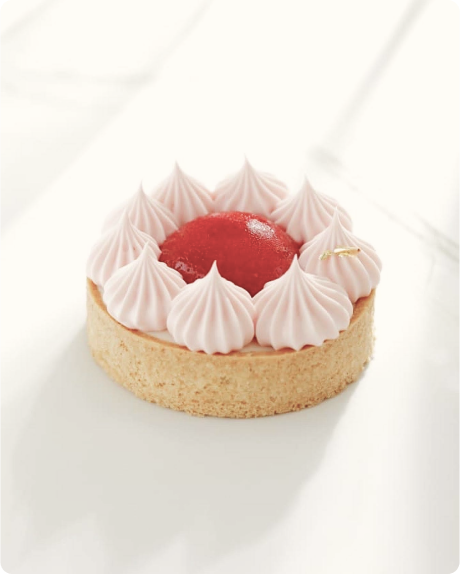
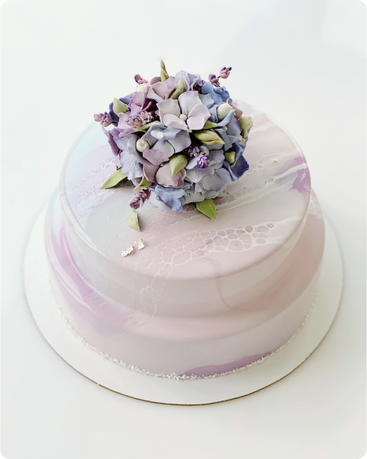
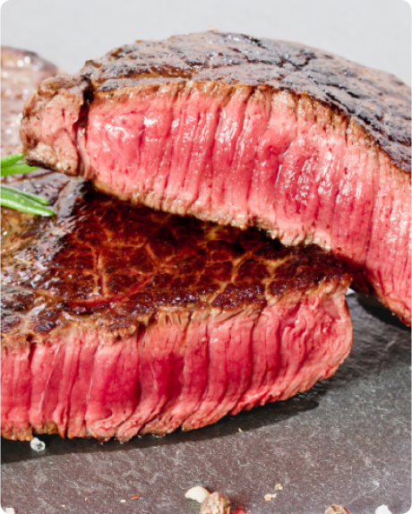

Рецепты и лайфхаки от известного шеф-повара
Москвы Александра Круглова

что такое выпечка?
это изделия, приготовленные из различных видов
теста, с использованием печи либо духовки. Но также к выпечке можно отнести жареное
тесто на сковородке или во фритюрнице в большом количестве масла.
Вся выпечка делится на сладкую и несладкую, и в свою очередь каждая группа имеет
множество разновидностей выпечки: пироги, кексы, маффины, печенье, пирожные,
профитроли, булочки, вафли,ватрушки из различных видов теста. Домашний хлеб, а
также другие хлебобулочные изделия – это тоже выпечка.

А что такое торт?
Торт является неотъемлемым атрибутом праздничного
стола на день рождения, свадьбу и чуть ли не ежедневным лакомством для сладкоежек.
История появления известных тортов не менее интересна, чем секреты их приготовления.
О том и другом мы сегодня обязательно вам расскажем.
История тортов, по-видимому, началась те времена, когда люди стали молоть зерно,
получая муку. Первые торты представляли собой самые обычные запечённые лепёшки,
которые по своим вкусовым качествам больше напоминали простой хлеб, нежели сладкое
лакомство.

Как подготовить мясо к жарке
1. Нарезайте мясо перпендикулярно волокнам
Кулинарные эксперименты доказывают , что нарезанный поперёк мышечных волокон стейк
получается гораздо более мягким. Идеальная толщина каждого куска — 2,5–4 см.
2. Дайте мясу приобрести комнатную температуру
Это важно для будущей равномерной прожарки. Если есть время, просто достаньте мясо
из холодильника за 2–3 часа до готовки — и оно согреется самостоятельно.
Если времени нет, заверните будущий стейк в пищевую плёнку и опустите на 20–30 минут
в тёплую (30–35 °С) воду.
3. Маринуйте только при необходимости
Не маринуйте, если планируете готовить классический стейк из вырезки или мраморного
мяса — те же рибай или филе-миньон. За счёт мягкости и сочности они хороши в
естественном — только с солью и перцем — виде. Маринад же может перебить вкус и
добавить стейку определённой вязкости.
Другое дело, если вы всё-таки решили рискнуть и приготовить альтернативный стейк. В
этом случае маринование желательно, иначе мясо на выходе будет слишком жёстким.
Маринадов существует много , выбирайте на свой вкус.
что такое выпечка?
это изделия, приготовленные из различных видов
теста, с использованием печи либо духовки. Но также к выпечке можно отнести жареное
тесто на сковородке или во фритюрнице в большом количестве масла.
Вся выпечка делится на сладкую и несладкую, и в свою очередь каждая группа имеет
множество разновидностей выпечки: пироги, кексы, маффины, печенье, пирожные,
профитроли, булочки, вафли, ватрушки из различных видов теста. Домашний хлеб, а
также другие хлебобулочные изделия – это тоже выпечка.
А что такое торт?
Торт является неотъемлемым атрибутом праздничного
стола на день рождения, свадьбу и чуть ли не ежедневным лакомством для сладкоежек.
История появления известных тортов не менее интересна, чем секреты их приготовления.
О том и другом мы сегодня обязательно вам расскажем.
История тортов, по-видимому, началась те времена, когда люди стали молоть зерно,
получая муку. Первые торты представляли собой самые обычные запечённые лепёшки,
которые по своим вкусовым качествам больше напоминали простой хлеб, нежели сладкое
лакомство.